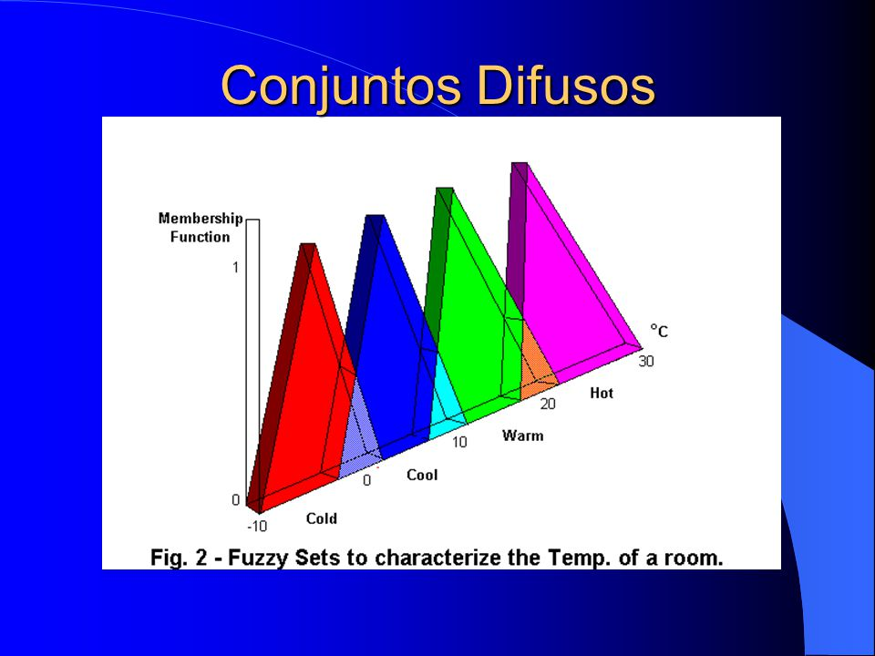

Semana 14: Sistemas Inteligentes en Python
Desarrollo de sistemas inteligentes con Python, Flask y Django - Algoritmos de IA y modelos de aprendizaje
1. Definición y Ámbitos de Aplicación
Concepto de Sistemas Inteligentes
Entidades computacionales capaces de percibir su entorno, procesar información, razonar y ejecutar acciones de forma autónoma para alcanzar metas definidas.
Alcances funcionales:
- Percepción sensorial: Captura de datos mediante sensores o fuentes digitales
- Razonamiento simbólico: Inferencia basada en reglas lógicas y conocimiento previo
- Aprendizaje adaptativo: Capacidad de mejorar su desempeño mediante experiencia
Ámbitos de aplicación:
Principales áreas de aplicación de sistemas inteligentes
- Automatización industrial y robótica autónoma
- Diagnóstico médico asistido por IA
- Vehículos inteligentes y sistemas ADAS
- Finanzas y mercados predictivos
- Sistemas expertos en atención al cliente
- Educación personalizada
2. Arquitectura de Sistemas Inteligentes
Componentes principales:
Diagrama de arquitectura de un sistema inteligente
- Módulo de percepción: Interfaces con sensores y fuentes de datos
- Módulo de conocimiento: Base de datos estructurada, ontologías
- Módulo de razonamiento: Algoritmos de inferencia lógica
- Módulo de aprendizaje: Técnicas de machine learning
- Módulo de acción: Control de actuadores físicos
- Interfaz hombre-máquina: Canales de interacción con usuarios
Ejemplo: Sistema de Adquisición con DRONE
# Subsistema de agentes inteligentes
class AgenteAnalisis:
def __init__(self):
self.modelo = cargar_modelo_ia()
def analizar_imagen(self, imagen):
preprocesada = preprocesar(imagen)
return self.modelo.predict(preprocesada)
# Subsistema de aprendizaje
def entrenar_modelo(datos):
modelo = RedNeuronal()
modelo.entrenar(datos)
return modelo
3. Redes Neuronales y Deep Learning
Redes Neuronales Artificiales
Estructura básica de una red neuronal
Modelos computacionales inspirados en el cerebro humano, diseñados para procesamiento paralelo y adaptativo de información.
Tipos comunes:
- Perceptrón multicapa (MLP): Para problemas básicos de clasificación
- Redes convolucionales (CNNs): Para visión artificial
- Redes recurrentes (RNNs/LSTMs): Para secuencias temporales
- Transformers: Para procesamiento de lenguaje natural
Ejemplo de implementación:
from tensorflow.keras.models import Sequential
from tensorflow.keras.layers import Dense
# Crear modelo
modelo = Sequential()
modelo.add(Dense(64, activation='relu', input_dim=20))
modelo.add(Dense(64, activation='relu'))
modelo.add(Dense(1, activation='sigmoid'))
# Compilar
modelo.compile(optimizer='adam',
loss='binary_crossentropy',
metrics=['accuracy'])
# Entrenar
modelo.fit(X_train, y_train, epochs=10, batch_size=32)
4. Algoritmos de Toma de Decisiones
Sistemas basados en reglas
# Ejemplo diagnóstico médico
def diagnosticar(sintomas):
if "fiebre" in sintomas and "tos" in sintomas:
return "Posible gripe"
elif "dolor_cabeza" in sintomas and "mareos" in sintomas:
return "Posible migraña"
else:
return "Consulta médica recomendada"
# Uso
sintomas_paciente = ["fiebre", "tos", "dolor_garganta"]
print(diagnosticar(sintomas_paciente)) # Posible gripe
Lógica difusa
Ejemplo de conjuntos difusos para temperatura
import numpy as np
import skfuzzy as fuzz
from skfuzzy import control as ctrl
# Variables
temperatura = ctrl.Antecedent(np.arange(15, 41, 1), 'temperatura')
potencia = ctrl.Consequent(np.arange(0, 101, 1), 'potencia')
# Conjuntos difusos
temperatura['baja'] = fuzz.trimf(temperatura.universe, [15, 15, 25])
temperatura['media'] = fuzz.trimf(temperatura.universe, [20, 27, 34])
# Reglas
regla1 = ctrl.Rule(temperatura['baja'], potencia['baja'])
regla2 = ctrl.Rule(temperatura['media'], potencia['media'])
# Sistema de control
controlador = ctrl.ControlSystem([regla1, regla2])
simulador = ctrl.ControlSystemSimulation(controlador)
# Prueba
simulador.input['temperatura'] = 28
simulador.compute()
print(simulador.output['potencia'])
5. Modelos Generativos y LLMs
Modelos Generativos vs Discriminativos
Comparación entre modelos generativos y discriminativos
- Generativos: GANs, Autoencoders, VAEs
- Discriminativos: SVM, Árboles de decisión, BERT
Large Language Models (LLM)
from transformers import AutoTokenizer, AutoModelForCausalLM
# Cargar modelo LLaMA
model_id = "meta-llama/Meta-llama-3-8B-Instruct"
tokenizer = AutoTokenizer.from_pretrained(model_id)
model = AutoModelForCausalLM.from_pretrained(model_id)
# Generar texto
prompt = "Explica cómo funciona una red neuronal"
inputs = tokenizer(prompt, return_tensors="pt")
outputs = model.generate(**inputs, max_new_tokens=200)
print(tokenizer.decode(outputs[0]))
6. Implementación con Flask
Interfaz web para sistema inteligente

Interfaz web para interactuar con modelos de IA
from flask import Flask, render_template, request, jsonify
from modelo_ia import cargar_modelo, predecir
app = Flask(__name__)
modelo = cargar_modelo()
@app.route('/')
def index():
return render_template('formulario.html')
@app.route('/predecir', methods=['POST'])
def predecir_ruta():
datos = request.json
resultado = predecir(modelo, datos)
return jsonify({"resultado": resultado})
if __name__ == '__main__':
app.run(debug=True)
Frontend con JavaScript
<!-- formulario.html -->
<form id="form-ia">
<input type="text" id="entrada" placeholder="Ingrese datos">
<button type="submit">Predecir</button>
</form>
<div id="resultado"></div>
<script>
document.getElementById('form-ia').onsubmit = async (e) => {
e.preventDefault();
const entrada = document.getElementById('entrada').value;
const response = await fetch('/predecir', {
method: 'POST',
headers: { 'Content-Type': 'application/json' },
body: JSON.stringify({ datos: entrada })
});
const data = await response.json();
document.getElementById('resultado').innerText = data.resultado;
};
</script>